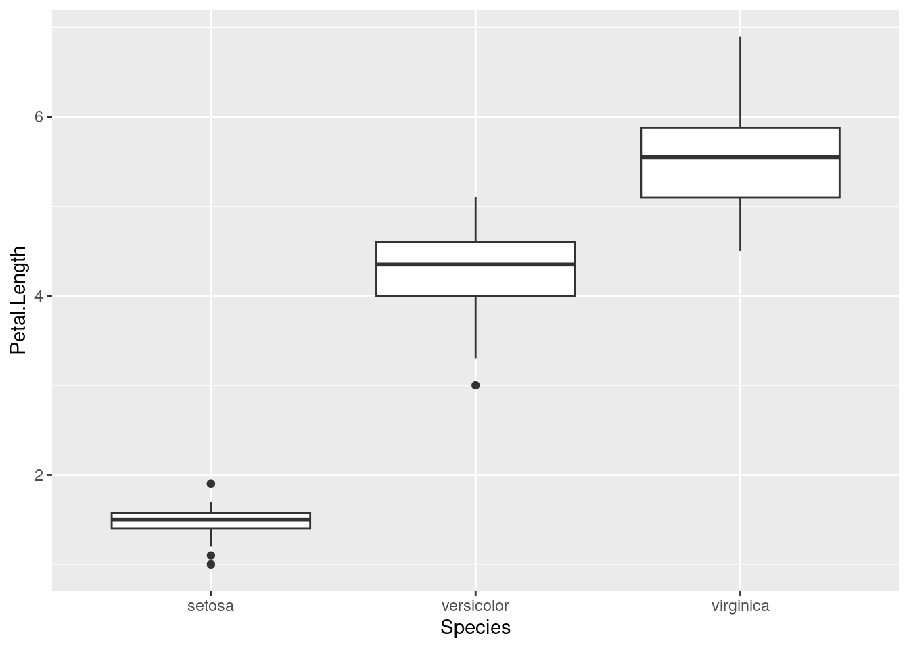
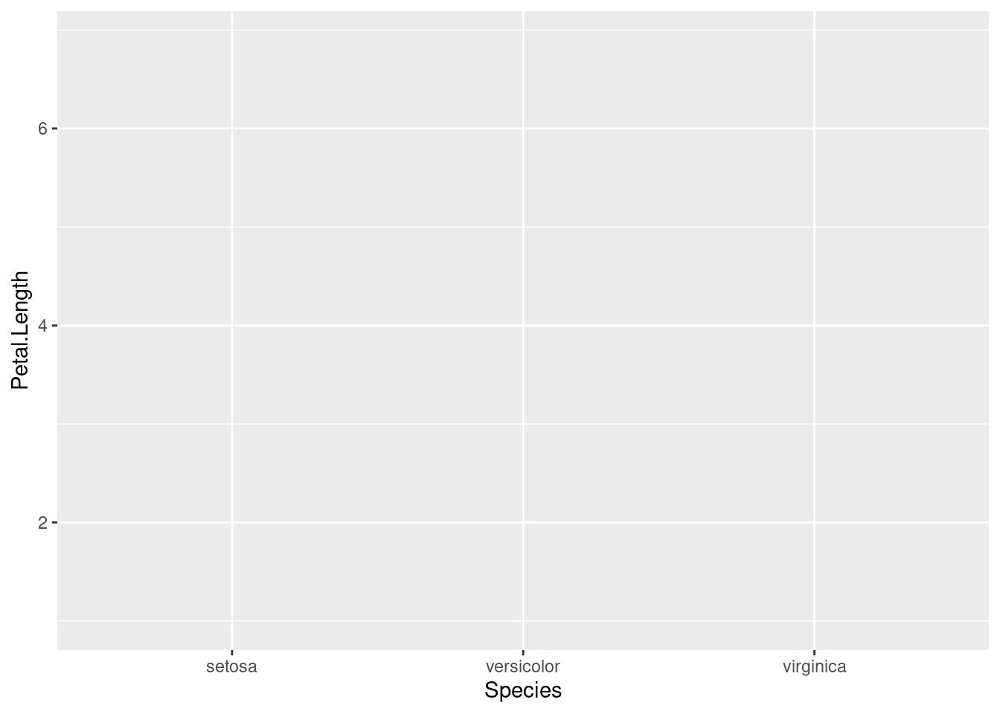

FAQ / Help
- Common Issues
- I’m getting an error related to something called Rtools
- What packages are part of the Tidyverse?
- Why are my changes not taking effect? It’s making my results look weird!
- Why do I have a
+sign instead of the cursor>in the console? - When should I use quotes (““) or backticks (``)?
- How do I know when to use the
pull()function, instead of just usingselect()?
- Common Errors
- Error in x : could not find function “y”
- Error: object ‘X’ not found
- Error: unexpected ‘,’ in … / Error: unexpected ‘)’ in … / Error: unexpected ‘X’ in …
- Error: unexpected symbol in “x”
- Error: unexpected input in “x”
- Error:
mappingmust be created byaes()/ℹDid you use ‘%>%’ or ‘|>’ instead of ‘+’? - Error in +.gg:
ℹDid you accidentally put ‘+’ on a new line?
- Preference Changes
Common Issues
What packages are part of the Tidyverse?
If you need to check what packages are part of the tidyverse, you can do so at this link.
Why are my changes not taking effect? It’s making my results look weird!
Forgetting to assign your data to an object
Often we are just printing our data and not either reassigning an existing object or creating a new object.
Here we are creating a new object from an existing one:
new_rivers <- sample(rivers, 5)
new_rivers## [1] 300 538 332 350 336Using just this will only print the result and not actually change new_rivers:
new_rivers + 1## [1] 301 539 333 351 337If we want to modify new_rivers and save that modified version, then we need to reassign new_rivers like so:
new_rivers <- new_rivers + 1
new_rivers## [1] 301 539 333 351 337If we forget to reassign this can cause subsequent steps to not work as expected because we will not be working with the data that has been modified.
Why do I have a + sign instead of the cursor > in the console?
Trouble with parentheses
You may get a + sign instead of the cursor > in the console suggesting that you have not closed an open parentheses. Each instance of ( should be followed by ).
Hit the “esc” key to restore your >, then fix/rerun your code.
When should I use quotes (““) or backticks (``)?
Check out our Guide on when to use quotes or backticks.
How do I know when to use the pull() function, instead of just using select()?
Check out our Guide on what functions require pulling values out first.
Common Errors
Error in x : could not find function “y”
Forgetting to load a library or misspelling a function or package
For example, we forgot library(tidyverse) below:
iris %>% pull(Species) ## Error in iris %>% pull(Species): could not find function "%>%"Below will not work because str_detect is missing a t at the end:
library(tidyverse) # need this! This can be at the top of your file
iris %>% pull(Species) %>% str_detec("setosa")## Error in str_detec(., "setosa"): could not find function "str_detec"This will not work because library() is misspelled:
libary(tidyverse)## Error in libary(tidyverse): could not find function "libary"Error: object ‘X’ not found
Forgetting to assign an object to start with
This error is usually caused by forgetting to assign an object to start with, or not running the piece of code that assigns an object. If you never created rivers2 and try to modify it like so:
rivers2 + 1## Error: object 'rivers2' not foundMake sure you run something like this, with the <- operator:
rivers2 <- new_rivers + 1
rivers2## [1] 302 540 334 352 338Error: unexpected ‘,’ in … / Error: unexpected ‘)’ in … / Error: unexpected ‘X’ in …
Trouble with parentheses
This error can be caused by missing parentheses. Such as:
library(dplyr)
all.equal((rivers+1, rivers)## Error in parse(text = input): <text>:2:20: unexpected ','
## 1: library(dplyr)
## 2: all.equal((rivers+1,
## ^It should be:
all.equal((rivers+1), rivers)## [1] "Mean relative difference: 0.001688663"You will also often get this error if you have the correct number of parentheses but wrong placement:
all.equal((rivers+1, rivers))## Error in parse(text = input): <text>:1:20: unexpected ','
## 1: all.equal((rivers+1,
## ^If you have too many parentheses like this (the last one is extra)… you will get this error:
all_equal((rivers+1), rivers))## Error in parse(text = input): <text>:1:30: unexpected ')'
## 1: all_equal((rivers+1), rivers))
## ^Error: unexpected symbol in “x”
Not using quotes or backticks when needed
You will need to use quotes for variable names that have spaces or unusual punctuation. It is best to avoid these and rename variables if a variable name has spaces.
df_quotes## # A tibble: 3 × 2
## `The Values` names
## <dbl> <chr>
## 1 1 A
## 2 2 B
## 3 3 CIf we want to specifically pull out the column with the variable named The Values we need to use quotes or back ticks.
df_quotes %>% pull(names) # this works fine! no spaces in `names`## [1] "A" "B" "C"df_quotes %>% pull("The Values") # this works## [1] 1 2 3df_quotes %>% pull(`The Values`) # this works## [1] 1 2 3df_quotes %>% pull(The Values) # this does not work!## Error in parse(text = input): <text>:1:24: unexpected symbol
## 1: df_quotes %>% pull(The Values
## ^Error: unexpected input in “x”
Copy+pasting quotation marks
If you copy paste code form somewhere with curly quotation marks, it will not work.
df_quotes %>% pull("The Values") # this works## [1] 1 2 3df_quotes %>% pull(“The Values”) # this doesn't work## Error in parse(text = input): <text>:1:20: unexpected input
## 1: df_quotes %>% pull(“
## ^Error: mapping must be created by aes() / ℹ Did you use ‘%>%’ or ‘|>’ instead of ‘+’?
Forgetting to use + to add ggplot2 layers
This will not work:
ggplot(data = iris, aes(x = Species, y = Petal.Length)) %>%
geom_boxplot()## Error in `geom_boxplot()`:
## ! `mapping` must be created by `aes()`.
## ℹ Did you use `%>%` or `|>` instead of `+`?This will work:
ggplot(data = iris, aes(x = Species, y = Petal.Length)) +
geom_boxplot()
Error in +.gg: ℹ Did you accidentally put ‘+’ on a new line?
This will not work:
ggplot(data = iris, aes(x = Species, y = Petal.Length))
+ geom_boxplot()## Error:
## ! Cannot use `+` with a single argument.
## ℹ Did you accidentally put `+` on a new line?This will work:
ggplot(data = iris, aes(x = Species, y = Petal.Length)) +
geom_boxplot()
Preference Changes
How do I get output to stop printing inside the Rmarkdown and only show it in the console? (How Ava has her setup?)
To change this, you will need to adjust the RStudio Settings.
Click the gear icon beside the knit button to expand the options menu. Select “Chunk Output in Console”.
You can select Remove Output. You should now see output in the console.
How do I change the color / theme?
Go to the menu Tools > Global Options > Appearance. Choose a theme and apply!